Крок перший
Вас викликано. Справа № 003
🕵️ 🦊 🦉 🐺 🦅 🐈
П'ять детективів і ведучий.
Детективний клуб · закрита справа · доступ за посиланням
Поліція закрила справу за тиждень. Спецгрупа з шести детективів пройшла шлях від зачиненого архіву до схованки в землі — і знайшла те, чого не мало існувати.
Справу розкритоКрок перший
🕵️ 🦊 🦉 🐺 🦅 🐈
П'ять детективів і ведучий.
Перевірка кандидата
«Мене не видно, але я існую. Мене можна знати, але не можна показати. Варто мені вирватися назовні — і мене вже не існує.»
Відповідь: ТАЄМНИЦЯ / СЕКРЕТ
Початок зустрічі
SLUZHBA-X SECURE GATEWAY v2.4
> LOGIN: СОКІЛ
> PASSWORD: 2482
Логін — перші літери чергових. Пароль — чотири портрети: Єлизавета II, Іван IV, Генріх VIII, Фрідріх II.
> ДОСТУП НАДАНО. СПРАВУ № 003 ЗНАЙДЕНО В АРХІВІ.
Місце події
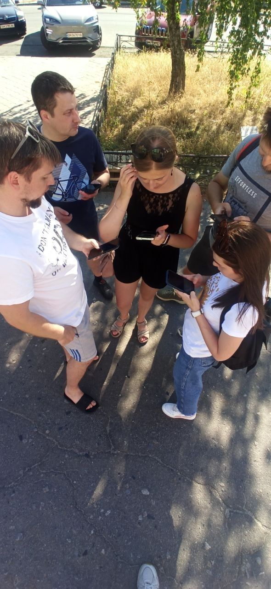
Виїзд групи · місце злочину
Довірена особа
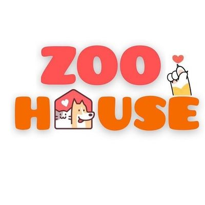
Речові докази
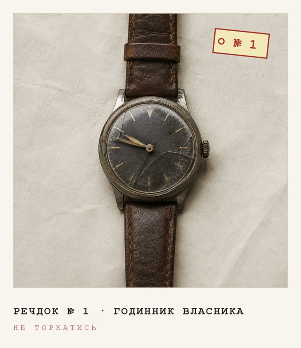
№1 годинник → 2147
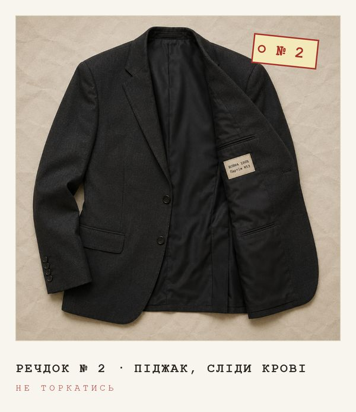
№2 піджак → 53
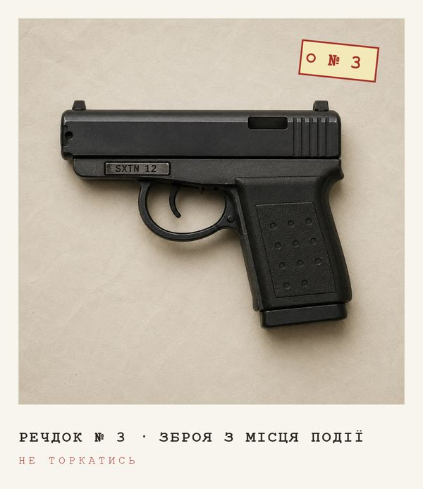
№3 зброя → 12
Розсекречення
21475312
Порядок підказали номери на бирках. Чорні блоки в досьє зникли — і з'явилася записка 117-С: майор Роман Гайдук, 19.08.1978, напрям «ГЛИБИНА».
Пастка
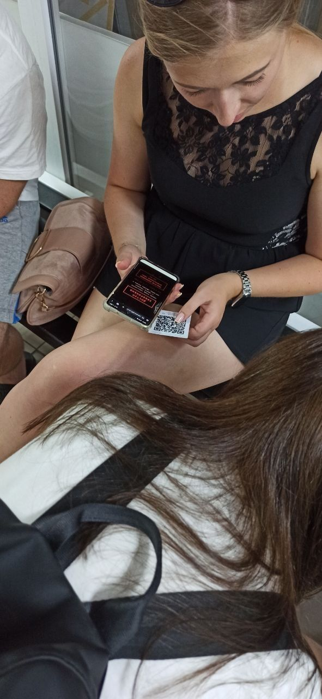
Червоний екран = мінус три хвилини
На речдоках висіли наліпки з попередженням. Попередження, як відомо, читають після.
Речдок № 4
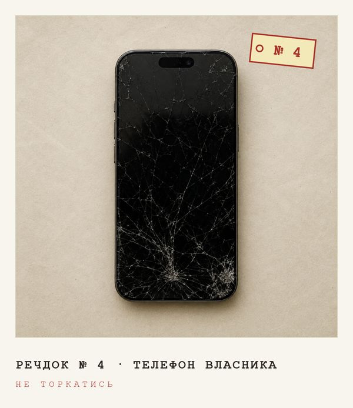
Пристрій зашифровано. Уся пам'ять — у хмарному дзеркалі.
код: 1908
Дата народження з розсекреченого досьє. Здогадалися самі. Ваньок
Нотатки в телефоні
Т-1 · Баня на Блакитних — 1000 м
Т-2 · Агент П — 750 м
Т-3 · Баня на Заливній — 1125 м
Три місця й три радіуси. Що з цим робити — ніде не написано.
Тріангуляція
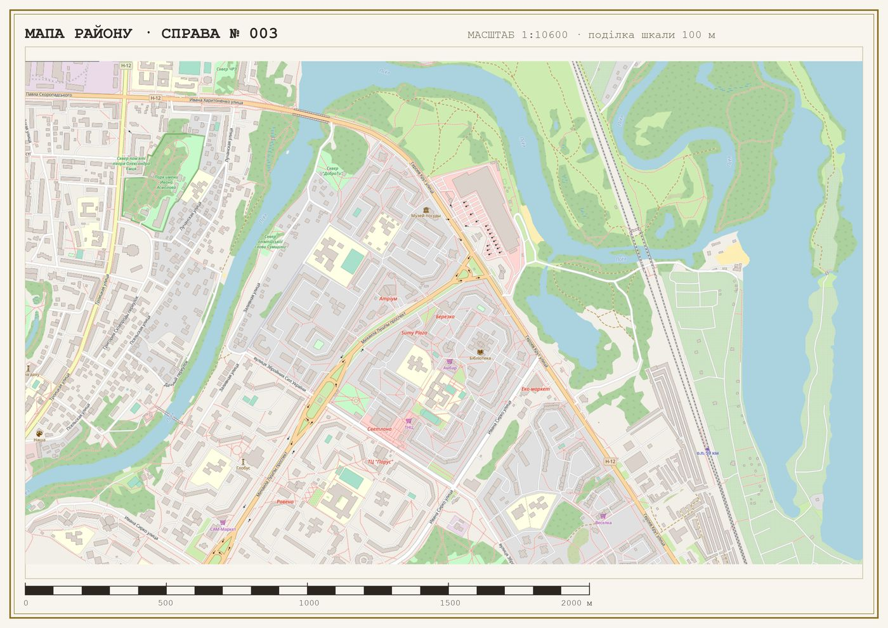
Точка Хточка Х — тут копали: відкрити в картах ↗
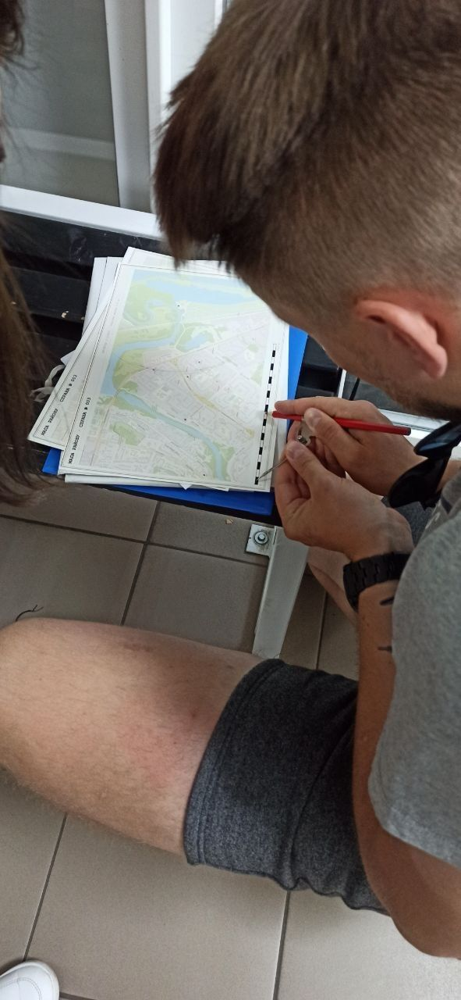
Три кола · один перетин
Далі — циркуль по паперовій мапі: 1000 м від однієї бані, 750 м від Агента П, 1125 м від другої. Три кола перетнулися в одній точці за річкою.
Шкала на мапі надрукована разом із нею — тому радіуси не збилися навіть після принтера.
Польові роботи
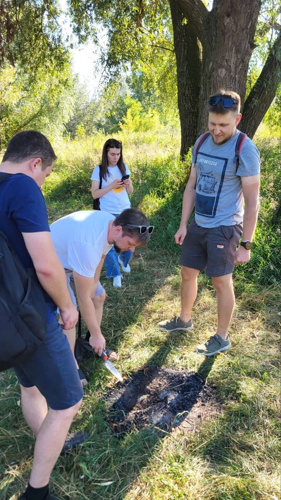
«Тут? Точно тут?»
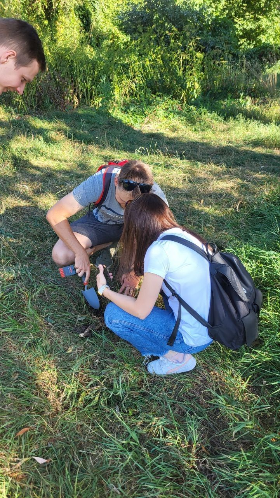
Знайшли
Вміст контейнера
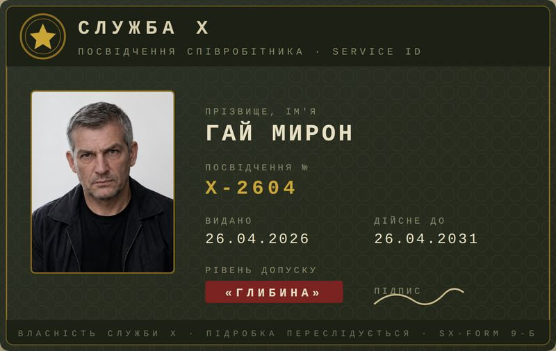
Посвідчення X-2604
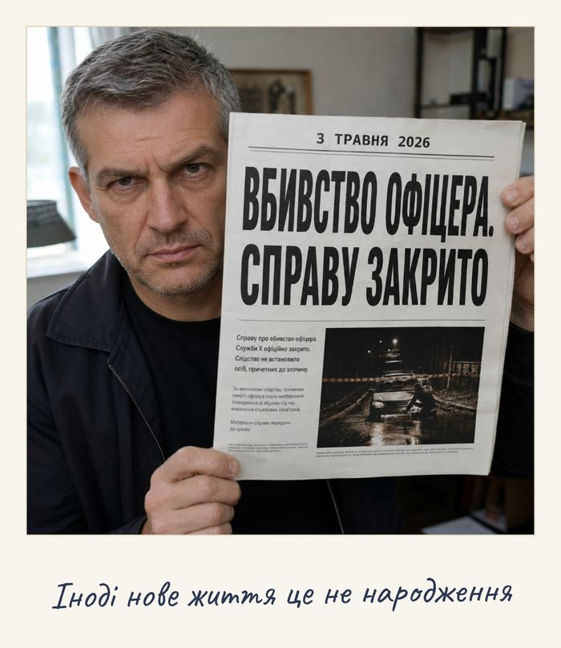
Фото з газетою
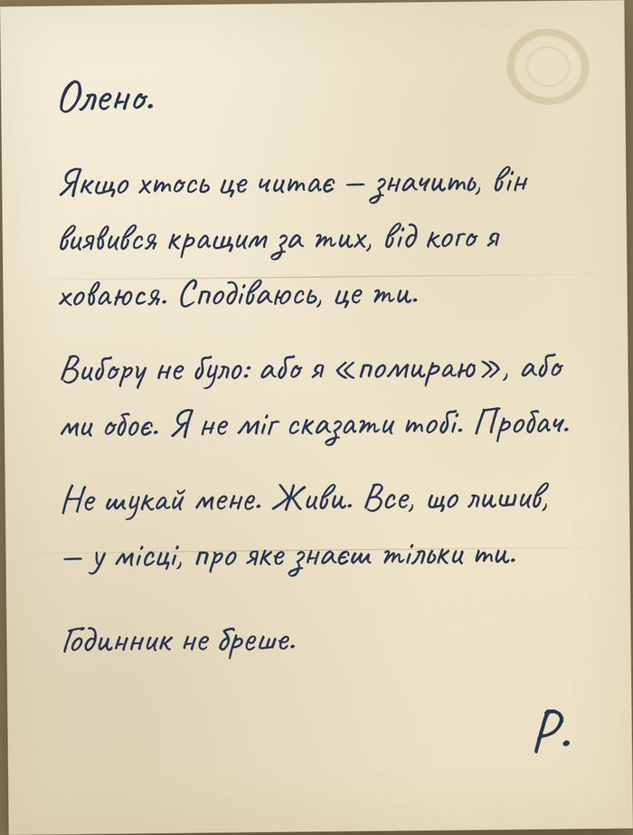
Лист Олені
Твіст перший
Документ мертвого існувати не може. Фото його. Ім'я нове. Дата видачі — 26.04, через два тижні після власного вбивства.
Майор інсценував свою смерть і пішов під іншим ім'ям: ГАЙ МИРОН.
Доповідь керівництву
Номер знайденого посвідчення в рапорті 003-Р:
X-2604
Справу розкритоДиспетчер: «Гарна робота. Відпочивайте.»
Твіст другий · епілог
Загинув невстановлений чоловік. Документів не мав, номери авто числяться викраденими. Деталь, що спантеличила слідчих: офіцерський годинник на руці зупинився о 21:47.
Та сама хвилина, що на речдоку № 1. Він утік від усіх — крім випадковості. Правду знаєте тільки ви.
Спецгрупа по справі № 003
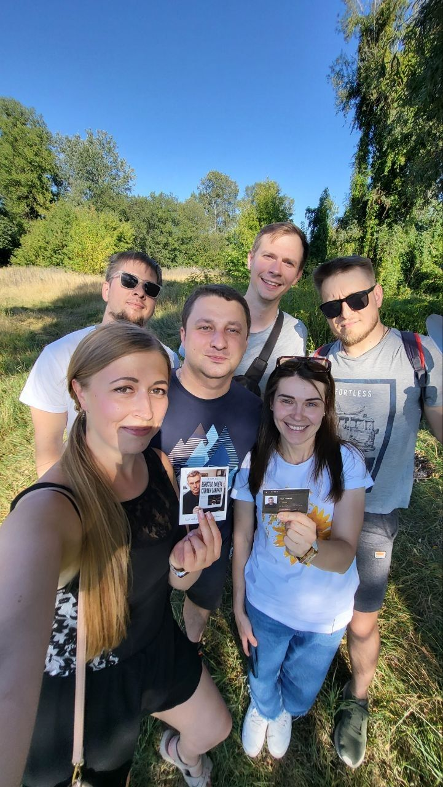
У руках — посвідчення й фото, яких не мало існувати